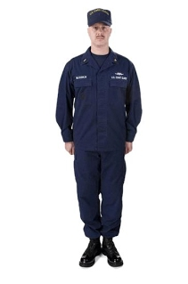
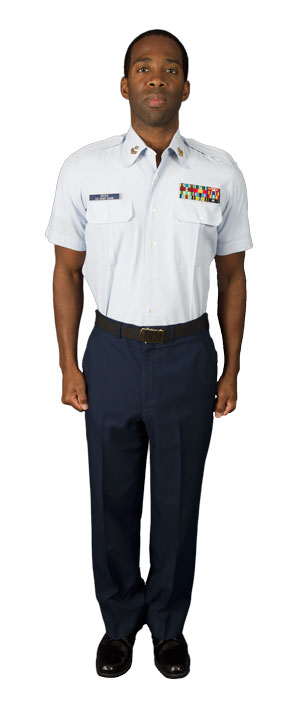
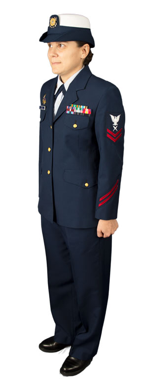

| Operational Dress Uniform (ODU) |
|---|
| The Operational Dress Uniform is a general purpose, everyday uniform intended for wear in any situation that does not require a dress uniform. The ODU is authorized for wear while commuting in a private vehicle between the workplace and residence of the member, including non-social stops. |
|  |
| Tropical Blue |
|---|
| The Tropical Blue uniform is work to compensate for climate variations. It is not accepted at any event where a coat and tie would be required. |
|  |
| Service Dress Blue |
|---|
| Service Dress Blue is suitable to wear on all occasions when wearing a uniform is prescribed or appropriate. |
|  |